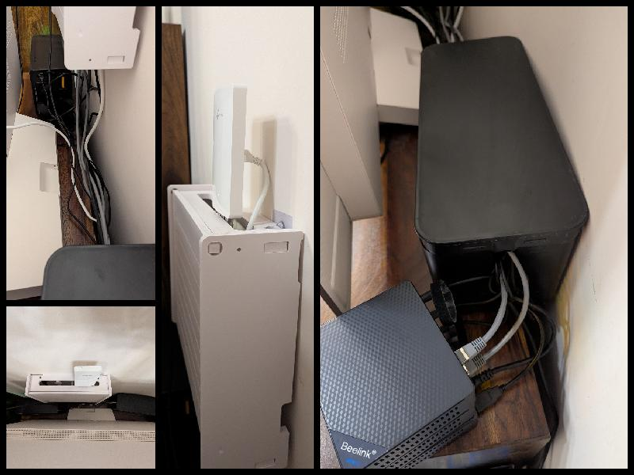
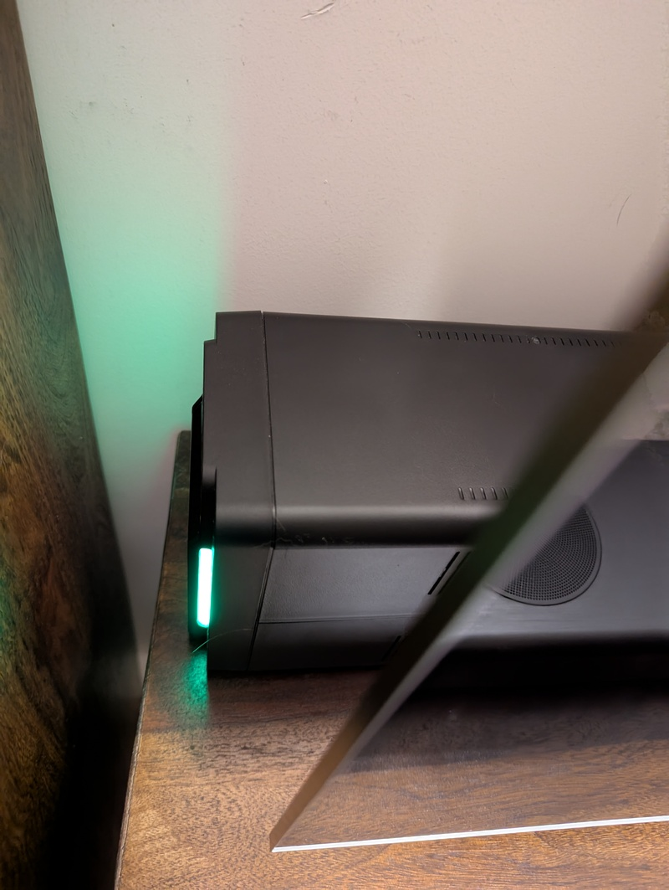

f3s: Kubernetes with FreeBSD - Part 3: Protecting from power cuts
Published at 2025-01-30T09:22:06+02:00
This is the third blog post about my f3s series for my self-hosting demands in my home lab. f3s? The "f" stands for FreeBSD, and the "3s" stands for k3s, the Kubernetes distribution we will use on FreeBSD-based physical machines.
2024-11-17 f3s: Kubernetes with FreeBSD - Part 1: Setting the stage
2024-12-03 f3s: Kubernetes with FreeBSD - Part 2: Hardware and base installation
2025-02-01 f3s: Kubernetes with FreeBSD - Part 3: Protecting from power cuts (You are currently reading this)

Table of Contents
Introduction
In this blog post, we are setting up the UPS for the cluster. A UPS, or Uninterruptible Power Supply, safeguards my cluster from unexpected power outages and surges. It acts as a backup battery that kicks in when the electricity cuts out—especially useful in my area, where power cuts are frequent—allowing for a graceful system shutdown and preventing data loss and corruption. This is especially important since I will also store some of my data on the f3s nodes.
Changes since last time
FreeBSD upgrade from 14.1 to 14.2
There has been a new release since the last blog post in this series. The upgrade from 14.1 was as easy as:
paul@f0: ~ % doas freebsd-update fetch
paul@f0: ~ % doas freebsd-update install
paul@f0: ~ % doas freebsd-update -r 14.2-RELEASE upgrade
paul@f0: ~ % doas freebsd-update install
paul@f0: ~ % doas shutdown -r now
And after rebooting, I ran:
paul@f0: ~ % doas freebsd-update install
paul@f0: ~ % doas pkg update
paul@f0: ~ % doas pkg upgrade
paul@f0: ~ % doas shutdown -r now
And after another reboot, I was on 14.2:
paul@f0:~ % uname -a
FreeBSD f0.lan.buetow.org 14.2-RELEASE FreeBSD 14.2-RELEASE
releng/14.2-n269506-c8918d6c7412 GENERIC amd64
And, of course, I ran this on all 3 nodes!
A new home (behind the TV)
I've put all the infrastructure behind my TV, as plenty of space is available. The TV hides most of the setup, which drastically improved the SAF (spouse acceptance factor).

I got rid of the mini-switch I mentioned in the previous blog post. I have the TP-Link EAP615-Wall mounted on the wall nearby, which is my OpenWrt-powered Wi-Fi hotspot. It also has 3 Ethernet ports, to which I connected the Beelink nodes. That's the device you see at the very top.
The Ethernet cables go downward through the cable boxes to the Beelink nodes. In addition to the Beelink f3s nodes, I connected the TP-Link to the UPS as well (not discussed further in this blog post, but the positive side effect is that my Wi-Fi will still work during a power loss for some time—and during a power cut, the Beelink nodes will still be able to communicate with each other).
On the very left (the black box) is the UPS, with four power outlets. Three go to the Beelink nodes, and one goes to the TP-Link. A USB output is also connected to the first Beelink node, f0.
On the very right (halfway hidden behind the TV) are the 3 Beelink nodes stacked on top of each other. The only downside (or upside?) is that my 14-month-old daughter is now chaos-testing the Beelink nodes, as the red power buttons (now reachable for her) are very attractive for her to press when passing by randomly. :-) Luckily, that will only cause graceful system shutdowns!
The UPS hardware
I wanted a UPS that I could connect to via FreeBSD, and that would provide enough backup power to operate the cluster for a couple of minutes (it turned out to be around an hour, but this time will likely be shortened after future hardware upgrades, like additional drives and a backup enclosure) and to automatically initiate the shutdown of all the f3s nodes.
I decided on the APC Back-UPS BX750MI model because:
- Zero noise level when there is no power cut (some light noise when the battery is in operation during a power cut).
- Cost: It is relatively affordable (not costing thousands).
- USB connectivity: Can be connected via USB to one of the FreeBSD hosts to read the UPS status.
- A power output of 750VA (or 410 watts), suitable for an hour of runtime for my f3s nodes (plus the Wi-Fi router).
- Multiple power outlets: Can connect all 3 f3s nodes directly.
- User-replaceable batteries: I can replace the batteries myself after two years or more (depending on usage).
- Its compact design. Overall, I like how it looks.

Configuring FreeBSD to Work with the UPS
USB Device Detection
Once plugged in via USB on FreeBSD, I could see the following in the kernel messages:
paul@f0: ~ % doas dmesg | grep UPS
ugen0.2: <American Power Conversion Back-UPS BX750MI> at usbus0
apcupsd Installation
To make use of the USB connection, the apcupsd package had to be installed:
paul@f0: ~ % doas install apcupsd
I have made the following modifications to the configuration file so that the UPS can be used via the USB interface:
paul@f0:/usr/local/etc/apcupsd % diff -u apcupsd.conf.sample apcupsd.conf
--- apcupsd.conf.sample 2024-11-01 16:40:42.000000000 +0200
+++ apcupsd.conf 2024-12-03 10:58:24.009501000 +0200
@@ -31,7 +31,7 @@
# 940-1524C, 940-0024G, 940-0095A, 940-0095B,
# 940-0095C, 940-0625A, M-04-02-2000
#
-UPSCABLE smart
+UPSCABLE usb
# To get apcupsd to work, in addition to defining the cable
# above, you must also define a UPSTYPE, which corresponds to
@@ -88,8 +88,10 @@
# that apcupsd binds to that particular unit
# (helpful if you have more than one USB UPS).
#
-UPSTYPE apcsmart
-DEVICE /dev/usv
+UPSTYPE usb
+DEVICE
# POLLTIME <int>
# Interval (in seconds) at which apcupsd polls the UPS for status. This
I left the remaining settings as the default ones; for example, the following are of main interest:
# If during a power failure, the remaining battery percentage
# (as reported by the UPS) is below or equal to BATTERYLEVEL,
# apcupsd will initiate a system shutdown.
BATTERYLEVEL 5
# If during a power failure, the remaining runtime in minutes
# (as calculated internally by the UPS) is below or equal to MINUTES,
# apcupsd, will initiate a system shutdown.
MINUTES 3
I then enabled and started the daemon:
paul@f0:/usr/local/etc/apcupsd % doas sysrc apcupsd_enable=YES
apcupsd_enable: -> YES
paul@f0:/usr/local/etc/apcupsd % doas service apcupsd start
Starting apcupsd.
UPS Connectivity Test
And voila, I could now access the UPS information via the apcaccess command; how convenient :-) (I also read through the manual page, which provides a good understanding of what else can be done with it!).
paul@f0:~ % apcaccess
APC : 001,035,0857
DATE : 2025-01-26 14:43:27 +0200
HOSTNAME : f0.lan.buetow.org
VERSION : 3.14.14 (31 May 2016) freebsd
UPSNAME : f0.lan.buetow.org
CABLE : USB Cable
DRIVER : USB UPS Driver
UPSMODE : Stand Alone
STARTTIME: 2025-01-26 14:43:25 +0200
MODEL : Back-UPS BX750MI
STATUS : ONLINE
LINEV : 230.0 Volts
LOADPCT : 4.0 Percent
BCHARGE : 100.0 Percent
TIMELEFT : 65.3 Minutes
MBATTCHG : 5 Percent
MINTIMEL : 3 Minutes
MAXTIME : 0 Seconds
SENSE : Medium
LOTRANS : 145.0 Volts
HITRANS : 295.0 Volts
ALARMDEL : No alarm
BATTV : 13.6 Volts
LASTXFER : Automatic or explicit self test
NUMXFERS : 0
TONBATT : 0 Seconds
CUMONBATT: 0 Seconds
XOFFBATT : N/A
SELFTEST : NG
STATFLAG : 0x05000008
SERIALNO : 9B2414A03599
BATTDATE : 2001-01-01
NOMINV : 230 Volts
NOMBATTV : 12.0 Volts
NOMPOWER : 410 Watts
END APC : 2025-01-26 14:44:06 +0200
APC Info on Partner Nodes:
So far, so good. Host f0 would shut down itself when short on power. But what about the f1 and f2 nodes? They aren't connected directly to the UPS and, therefore, wouldn't know that their power is about to be cut off. For this, apcupsd running on the f1 and f2 nodes can be configured to retrieve UPS information via the network from the apcupsd server running on the f0 node, which is connected directly to the APC via USB.
Of course, this won't work when f0 is down. In this case, no operational node would be connected to the UPS via USB; therefore, the current power status would not be known. However, I consider this a rare circumstance. Furthermore, in case of an f0 system crash, sudden power outages on the two other nodes would occur at different times making real data loss (the main concern here) less likely.
And if f0 is down and f1 and f2 receive new data and crash midway, it's likely that a client (e.g., an Android app or another laptop) still has the data stored on it, making data recoverable and data loss overall nearly impossible. I'd receive an alert if any of the nodes go down (more on monitoring later in this blog series).
Installation on partners
To do this, I installed apcupsd via doas pkg install apcupsd on f1 and f2, and then I could connect to it this way:
paul@f1:~ % apcaccess -h f0.lan.buetow.org | grep Percent
LOADPCT : 12.0 Percent
BCHARGE : 94.0 Percent
MBATTCHG : 5 Percent
But I want the daemon to be configured and enabled in such a way that it connects to the master UPS node (the one with the UPS connected via USB) so that it can also initiate a system shutdown when the UPS battery reaches low levels. For that, apcupsd itself needs to be aware of the UPS status.
On f1 and f2, I changed the configuration to use f0 (where apcupsd is listening) as a remote device. I also changed the MINUTES setting from 3 to 6 and the BATTERYLEVEL setting from 5 to 10 to ensure that the f1 and f2 nodes could still connect to the f0 node for UPS information before f0 decides to shut down itself. So f1 and f2 must shut down earlier than f0:
paul@f2:/usr/local/etc/apcupsd % diff -u apcupsd.conf.sample apcupsd.conf
--- apcupsd.conf.sample 2024-11-01 16:40:42.000000000 +0200
+++ apcupsd.conf 2025-01-26 15:52:45.108469000 +0200
@@ -31,7 +31,7 @@
# 940-1524C, 940-0024G, 940-0095A, 940-0095B,
# 940-0095C, 940-0625A, M-04-02-2000
#
-UPSCABLE smart
+UPSCABLE ether
# To get apcupsd to work, in addition to defining the cable
# above, you must also define a UPSTYPE, which corresponds to
@@ -52,7 +52,6 @@
# Network Information Server. This is used if the
# UPS powering your computer is connected to a
# different computer for monitoring.
-#
# snmp hostname:port:vendor:community
# SNMP network link to an SNMP-enabled UPS device.
# Hostname is the ip address or hostname of the UPS
@@ -88,8 +87,8 @@
# that apcupsd binds to that particular unit
# (helpful if you have more than one USB UPS).
#
-UPSTYPE apcsmart
-DEVICE /dev/usv
+UPSTYPE net
+DEVICE f0.lan.buetow.org:3551
# POLLTIME <int>
# Interval (in seconds) at which apcupsd polls the UPS for status. This
@@ -147,12 +146,12 @@
# If during a power failure, the remaining battery percentage
# (as reported by the UPS) is below or equal to BATTERYLEVEL,
# apcupsd will initiate a system shutdown.
-BATTERYLEVEL 5
+BATTERYLEVEL 10
# If during a power failure, the remaining runtime in minutes
# (as calculated internally by the UPS) is below or equal to MINUTES,
# apcupsd, will initiate a system shutdown.
-MINUTES 3
+MINUTES 6
# If during a power failure, the UPS has run on batteries for TIMEOUT
# many seconds or longer, apcupsd will initiate a system shutdown.
So I also ran the following commands on f1 and f2:
paul@f1:/usr/local/etc/apcupsd % doas sysrc apcupsd_enable=YES
apcupsd_enable: -> YES
paul@f1:/usr/local/etc/apcupsd % doas service apcupsd start
Starting apcupsd.
And then I was able to connect to localhost via the apcaccess command:
paul@f1:~ % doas apcaccess | grep Percent
LOADPCT : 5.0 Percent
BCHARGE : 95.0 Percent
MBATTCHG : 5 Percent
Power outage simulation
Pulling the plug
I simulated a power outage by removing the power input from the APC. Immediately, the following message appeared on all the nodes:
Broadcast Message from root@f0.lan.buetow.org
(no tty) at 15:03 EET...
Power failure. Running on UPS batteries.
I ran the following command to confirm the available battery time:
paul@f0:/usr/local/etc/apcupsd % apcaccess -p TIMELEFT
63.9 Minutes
And after around one hour (f1 and f2 a bit earlier, f0 a bit later due to the different BATTERYLEVEL and MINUTES settings outlined earlier), the following broadcast was sent out:
Broadcast Message from root@f0.lan.buetow.org
(no tty) at 15:08 EET...
*** FINAL System shutdown message from root@f0.lan.buetow.org ***
System going down IMMEDIATELY
apcupsd initiated shutdown
And all the nodes shut down safely before the UPS ran out of battery!
Restoring power
After restoring power, I checked the logs in /var/log/daemon.log and found the following on all 3 nodes:
Jan 26 17:36:24 f2 apcupsd[2159]: Power failure.
Jan 26 17:36:30 f2 apcupsd[2159]: Running on UPS batteries.
Jan 26 17:36:30 f2 apcupsd[2159]: Battery charge below low limit.
Jan 26 17:36:30 f2 apcupsd[2159]: Initiating system shutdown!
Jan 26 17:36:30 f2 apcupsd[2159]: User logins prohibited
Jan 26 17:36:32 f2 apcupsd[2159]: apcupsd exiting, signal 15
Jan 26 17:36:32 f2 apcupsd[2159]: apcupsd shutdown succeeded
All good :-) See you in the next post of this series!
Other BSD related posts are:
2025-02-01 f3s: Kubernetes with FreeBSD - Part 3: Protecting from power cuts (You are currently reading this)
2024-12-03 f3s: Kubernetes with FreeBSD - Part 2: Hardware and base installation
2024-11-17 f3s: Kubernetes with FreeBSD - Part 1: Setting the stage
2024-04-01 KISS high-availability with OpenBSD
2024-01-13 One reason why I love OpenBSD
2022-10-30 Installing DTail on OpenBSD
2022-07-30 Let's Encrypt with OpenBSD and Rex
2016-04-09 Jails and ZFS with Puppet on FreeBSD
E-Mail your comments to paul@nospam.buetow.org :-)
Back to the main site